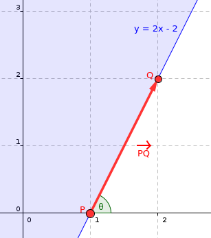
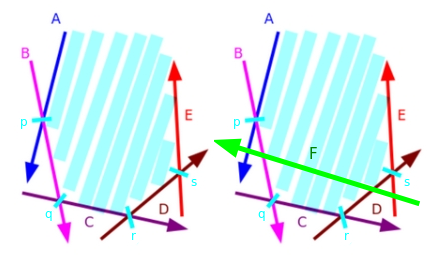
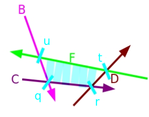

Giao của các nửa mặt phẳng¶
Trong bài này, ta xét bài toán tính giao của một tập nửa mặt phẳng. Giao đó có thể được biểu diễn thuận tiện dưới dạng một miền lồi hay đa giác lồi: mọi điểm trong miền đều thuộc tất cả các nửa mặt phẳng, và đa giác này chính là đối tượng ta muốn tìm hoặc xây dựng. Bài viết trình bày trực giác ban đầu, mô tả một phương pháp $O(N \log N)$ có tên Sort-and-Incremental và đưa ra một số ứng dụng của kỹ thuật này.
Bạn đọc rất nên nắm vững các đối tượng và phép toán hình học cơ bản như điểm, vector, giao của các đường thẳng. Ngoài ra, kiến thức về bao lồi hoặc kỹ thuật bao lồi (Convex Hull Trick) có thể giúp hiểu bài tốt hơn, nhưng hoàn toàn không phải điều kiện tiên quyết.
Một số làm rõ và định nghĩa ban đầu¶
Trong toàn bài, ta đưa ra một số giả thiết sau, trừ khi có chỉ định khác:
- Gọi $N$ là số nửa mặt phẳng trong tập đã cho.
- Ta biểu diễn đường thẳng và nửa mặt phẳng bằng một điểm và một vector: một điểm bất kỳ nằm trên đường thẳng và vector chỉ phương của đường thẳng đó. Với nửa mặt phẳng, ta giả sử miền được phép nằm bên trái vector chỉ phương. Ta cũng định nghĩa góc của một nửa mặt phẳng là góc cực của vector chỉ phương của nó. Xem ví dụ ở hình dưới.
- Ta giả sử giao thu được luôn bị chặn hoặc rỗng. Nếu cần xử lý trường hợp không bị chặn, ta chỉ cần thêm 4 nửa mặt phẳng xác định một hộp bao đủ lớn.
- Để đơn giản, ta giả sử không có hai nửa mặt phẳng song song trong tập đã cho. Cuối bài sẽ bàn về cách xử lý các trường hợp này.

Nửa mặt phẳng $y \geq 2x - 2$ có thể được biểu diễn bởi điểm $P = (1, 0)$ cùng vector chỉ phương $PQ = Q - P = (1, 2)$.
Cách làm vét cạn - $O(N^3)$¶
Một cách giải trực tiếp là tính giao điểm của các đường thẳng ứng với từng cặp nửa mặt phẳng, rồi với mỗi giao điểm kiểm tra xem nó có thuộc tất cả các nửa mặt phẳng còn lại hay không. Vì có $O(N^2)$ giao điểm và mỗi điểm cần kiểm tra $O(N)$ nửa mặt phẳng, tổng độ phức tạp thời gian là $O(N^3)$. Sau đó ta có thể dựng lại miền giao thực tế, chẳng hạn bằng thuật toán bao lồi trên tập các giao điểm thuộc mọi nửa mặt phẳng.
Có thể thấy vì sao cách này hoạt động: các đỉnh của đa giác lồi thu được đều là giao điểm của các đường thẳng biên nửa mặt phẳng, và mỗi đỉnh hiển nhiên thuộc tất cả các nửa mặt phẳng. Ưu điểm chính là cách này dễ hiểu, dễ nhớ và có thể cài đặt nhanh nếu chỉ cần kiểm tra giao có rỗng hay không. Tuy nhiên, nó rất chậm và không phù hợp với phần lớn bài toán, nên ta cần cách nhanh hơn.
Cách làm tăng dần - $O(N^2)$¶
Một cách khá trực tiếp khác là xây dựng giao tăng dần, mỗi lần thêm một nửa mặt phẳng. Về cơ bản, cách này tương đương với việc cắt một đa giác lồi bằng một đường thẳng $N$ lần và loại các nửa mặt phẳng dư thừa sau mỗi bước. Ta có thể biểu diễn đa giác lồi bằng danh sách các đoạn thẳng. Để cắt nó bằng một nửa mặt phẳng, chỉ cần tìm giao điểm của các đoạn với đường thẳng biên của nửa mặt phẳng (chỉ có hai giao điểm nếu đường thẳng cắt đa giác theo cách thông thường), rồi thay mọi đoạn nằm giữa hai giao điểm bằng đoạn mới tương ứng với nửa mặt phẳng. Vì thao tác này có thể cài đặt trong thời gian tuyến tính, ta có thể bắt đầu với một hộp bao lớn rồi lần lượt cắt nó bằng từng nửa mặt phẳng, đạt tổng độ phức tạp thời gian $O(N^2)$.
Đây là một bước tiến lớn, nhưng việc phải duyệt qua $O(N)$ nửa mặt phẳng ở mỗi bước có vẻ lãng phí. Tiếp theo, ta sẽ thấy một số nhận xét giúp tái sử dụng ý tưởng của phương pháp tăng dần để tạo thuật toán $O(N \log N)$.
Thuật toán Sort-and-Incremental - $O(N \log N)$¶
Nguồn đầu tiên mô tả thuật toán này đầy đủ mà chúng tôi tìm thấy là luận văn của Zeyuan Zhu cho kỳ tuyển chọn đội tuyển Trung Quốc năm 2006, có tên New Algorithm for Half-plane Intersection and its Practical Value. Cách tiếp cận dưới đây dựa trên cùng thuật toán đó, nhưng thay vì tính riêng hai giao cho nửa dưới và nửa trên, ta sẽ dựng toàn bộ kết quả trong một lượt bằng deque (hàng đợi hai đầu).
Thuật toán tận dụng tính lồi của miền giao: biên của miền gồm những đoạn thuộc các nửa mặt phẳng, theo thứ tự góc đã sắp xếp. Từ đó có một nhận xét quan trọng: nếu lần lượt lấy giao với các nửa mặt phẳng theo thứ tự góc tăng dần, như thứ tự chúng xuất hiện trên hình dạng giao cuối cùng, và lưu chúng trong một hàng đợi hai đầu, ta chỉ cần xóa các nửa mặt phẳng ở đầu và cuối deque.
Để hình dung, giả sử ta thực hiện cách tăng dần ở trên với tập nửa mặt phẳng được sắp theo góc từ $-\pi$ đến $\pi$ và sắp bắt đầu một bước thứ $k$ bất kỳ. Khi đó, ta đã xây dựng giao của $k-1$ nửa mặt phẳng đầu tiên. Vì các nửa mặt phẳng được sắp theo góc, dù nửa mặt phẳng thứ $k$ là gì, nó cũng tạo một chỗ ngoặt lồi với nửa mặt phẳng thứ $(K-1)$. Do đó, một số tình huống có thể xảy ra:
- Một số nửa mặt phẳng ở cuối giao có thể trở nên dư thừa, cũng có thể không có nửa mặt phẳng nào. Khi đó ta lấy những nửa mặt phẳng không còn cần thiết này ra khỏi cuối deque.
- Một số nửa mặt phẳng ở đầu giao có thể trở nên dư thừa, hoặc không có nửa mặt phẳng nào như vậy. Tương tự trường hợp 1, ta lấy chúng ra khỏi đầu deque.
- Giao có thể trở thành rỗng sau khi xử lý trường hợp 1 và/hoặc 2. Khi đó ta báo giao rỗng và kết thúc thuật toán.
Một nửa mặt phẳng được gọi là “dư thừa” nếu nó không đóng góp gì vào giao. Có thể xóa nửa mặt phẳng đó mà giao thu được hoàn toàn không đổi.
Xét một ví dụ nhỏ có hình minh họa:
Gọi $H = \{ A, B, C, D, E \}$ là tập các nửa mặt phẳng hiện có trong giao. Gọi $P = \{ p, q, r, s \}$ là tập giao điểm của các nửa mặt phẳng kề nhau trong H. Giả sử ta muốn lấy giao của miền này với nửa mặt phẳng $F$, như hình dưới:

Nửa mặt phẳng $F$ làm cho $A$ và $E$ trở nên dư thừa trong giao. Vì vậy, ta lần lượt xóa $A$ ở đầu và $E$ ở cuối giao, rồi thêm $F$ vào cuối. Cuối cùng ta thu được giao mới $H = \{ B, C, D, F\}$ với $P = \{ q, r, t, u \}$.

Đến đây ta đã có gần đủ những gì cần thiết để cài đặt thuật toán, nhưng vẫn phải bàn về một số trường hợp đặc biệt. Đầu bài, ta nói sẽ thêm một hộp bao để xử lý trường hợp giao không bị chặn. Vì thế trường hợp khó duy nhất còn phải xử lý là các nửa mặt phẳng song song. Có hai trường hợp con: chúng song song cùng hướng hoặc ngược hướng. Ta cần xử lý riêng vì phải tính giao điểm của các đường thẳng biên để kiểm tra một nửa mặt phẳng có dư thừa hay không, trong khi hai đường thẳng song song không có giao điểm.
Với hai nửa mặt phẳng song song ngược hướng, việc thêm hộp bao để xử lý trường hợp không bị chặn cũng xử lý trường hợp hai nửa mặt phẳng như vậy nằm kề nhau sau khi sắp xếp: phải có ít nhất một nửa mặt phẳng của hộp bao nằm giữa chúng, vì chúng đã được sắp theo góc.
- Tuy nhiên, sau khi xóa một số nửa mặt phẳng khỏi cuối deque, hai nửa mặt phẳng song song ngược hướng có thể trở nên kề nhau. Trường hợp này chỉ xảy ra khi giao của hai nửa mặt phẳng đó rỗng, vì nửa mặt phẳng cuối cùng sẽ khiến mọi phần tử bị xóa khỏi deque. Để tránh vấn đề này, ta phải kiểm tra riêng các nửa mặt phẳng song song; nếu chúng ngược hướng, ta dừng thuật toán ngay và trả về giao rỗng.
Vậy trường hợp còn phải xử lý là có nhiều nửa mặt phẳng cùng góc. Trường hợp này khá dễ: chỉ cần giữ nửa mặt phẳng ngoài cùng bên trái và xóa phần còn lại, vì chúng đều dư thừa. Tóm lại, thuật toán đầy đủ có dạng gần như sau:
- Sắp xếp tập nửa mặt phẳng theo góc, mất $O(N \log N)$ thời gian.
- Duyệt các nửa mặt phẳng và với mỗi nửa mặt phẳng thực hiện thủ tục tăng dần, lấy phần tử khỏi đầu và cuối hàng đợi hai đầu khi cần. Tổng thời gian là tuyến tính, vì mỗi nửa mặt phẳng chỉ được thêm hoặc xóa một lần.
- Cuối cùng, ta dễ dàng thu được đa giác lồi là giao bằng cách tính giao điểm của các nửa mặt phẳng kề nhau trong deque sau khi kết thúc thủ tục. Bước này cũng mất thời gian tuyến tính. Có thể lưu các điểm đó ngay trong bước 2 và bỏ qua bước này, nhưng chúng tôi cho rằng tính chúng khi cần sẽ dễ cài đặt hơn một chút.
Tổng cộng, độ phức tạp thời gian là $O(N \log N)$. Vì sắp xếp rõ ràng là phần chi phối, thuật toán chạy trong thời gian tuyến tính trong trường hợp đặc biệt các nửa mặt phẳng đã được sắp theo góc từ trước, chẳng hạn khi lấy các nửa mặt phẳng xác định một đa giác lồi.
Cài đặt trực tiếp¶
Dưới đây là một cài đặt trực tiếp của thuật toán, với các chú thích giải thích phần lớn các bước:
Các cấu trúc điểm/vector và nửa mặt phẳng cơ bản:
// Redefine epsilon and infinity as necessary. Be mindful of precision errors.
const long double eps = 1e-9, inf = 1e9;
// Basic point/vector struct.
struct Point {
long double x, y;
explicit Point(long double x = 0, long double y = 0) : x(x), y(y) {}
// Addition, subtraction, multiply by constant, dot product, cross product.
friend Point operator + (const Point& p, const Point& q) {
return Point(p.x + q.x, p.y + q.y);
}
friend Point operator - (const Point& p, const Point& q) {
return Point(p.x - q.x, p.y - q.y);
}
friend Point operator * (const Point& p, const long double& k) {
return Point(p.x * k, p.y * k);
}
friend long double dot(const Point& p, const Point& q) {
return p.x * q.x + p.y * q.y;
}
friend long double cross(const Point& p, const Point& q) {
return p.x * q.y - p.y * q.x;
}
};
// Basic half-plane struct.
struct Halfplane {
// 'p' is a passing point of the line and 'pq' is the direction vector of the line.
Point p, pq;
long double angle;
Halfplane() {}
Halfplane(const Point& a, const Point& b) : p(a), pq(b - a) {
angle = atan2l(pq.y, pq.x);
}
// Check if point 'r' is outside this half-plane.
// Every half-plane allows the region to the LEFT of its line.
bool out(const Point& r) {
return cross(pq, r - p) < -eps;
}
// Comparator for sorting.
bool operator < (const Halfplane& e) const {
return angle < e.angle;
}
// Intersection point of the lines of two half-planes. It is assumed they're never parallel.
friend Point inter(const Halfplane& s, const Halfplane& t) {
long double alpha = cross((t.p - s.p), t.pq) / cross(s.pq, t.pq);
return s.p + (s.pq * alpha);
}
};
Thuật toán:
// Actual algorithm
vector<Point> hp_intersect(vector<Halfplane>& H) {
Point box[4] = { // Bounding box in CCW order
Point(inf, inf),
Point(-inf, inf),
Point(-inf, -inf),
Point(inf, -inf)
};
for(int i = 0; i<4; i++) { // Add bounding box half-planes.
Halfplane aux(box[i], box[(i+1) % 4]);
H.push_back(aux);
}
// Sort by angle and start algorithm
sort(H.begin(), H.end());
deque<Halfplane> dq;
int len = 0;
for(int i = 0; i < int(H.size()); i++) {
// Remove from the back of the deque while last half-plane is redundant
while (len > 1 && H[i].out(inter(dq[len-1], dq[len-2]))) {
dq.pop_back();
--len;
}
// Remove from the front of the deque while first half-plane is redundant
while (len > 1 && H[i].out(inter(dq[0], dq[1]))) {
dq.pop_front();
--len;
}
// Special case check: Parallel half-planes
if (len > 0 && fabsl(cross(H[i].pq, dq[len-1].pq)) < eps) {
// Opposite parallel half-planes that ended up checked against each other.
if (dot(H[i].pq, dq[len-1].pq) < 0.0)
return vector<Point>();
// Same direction half-plane: keep only the leftmost half-plane.
if (H[i].out(dq[len-1].p)) {
dq.pop_back();
--len;
}
else continue;
}
// Add new half-plane
dq.push_back(H[i]);
++len;
}
// Final cleanup: Check half-planes at the front against the back and vice-versa
while (len > 2 && dq[0].out(inter(dq[len-1], dq[len-2]))) {
dq.pop_back();
--len;
}
while (len > 2 && dq[len-1].out(inter(dq[0], dq[1]))) {
dq.pop_front();
--len;
}
// Report empty intersection if necessary
if (len < 3) return vector<Point>();
// Reconstruct the convex polygon from the remaining half-planes.
vector<Point> ret(len);
for(int i = 0; i+1 < len; i++) {
ret[i] = inter(dq[i], dq[i+1]);
}
ret.back() = inter(dq[len-1], dq[0]);
return ret;
}
Thảo luận về cài đặt¶
Một điểm đặc biệt cần lưu ý là khi nhiều nửa mặt phẳng giao nhau tại cùng một điểm, thuật toán có thể trả về các điểm kề nhau bị lặp trong đa giác cuối cùng. Tuy nhiên, điều này không ảnh hưởng đến việc xác định đúng giao có rỗng hay không và cũng không ảnh hưởng đến diện tích đa giác. Tùy vào các thao tác cần làm sau đó, bạn có thể muốn xóa các điểm trùng. Có thể làm việc này rất dễ bằng std::unique. Trong quá trình chạy thuật toán, ta muốn giữ các điểm lặp để tính đúng các giao có diện tích bằng không, ví dụ giao chỉ gồm một điểm, đường thẳng hoặc đoạn thẳng. Bạn đọc nên thử một vài ví dụ nhỏ tự tạo mà giao là một điểm hoặc đường thẳng.
Một vấn đề khác là xử lý các nửa mặt phẳng được cho dưới dạng ràng buộc tuyến tính, chẳng hạn $ax + by + c \leq 0$. Khi đó có hai lựa chọn. Ta có thể cài đặt thuật toán với những thay đổi tương ứng để làm việc trực tiếp với biểu diễn này, về cơ bản là tự tạo cấu trúc nửa mặt phẳng; việc đó khá trực tiếp nếu đã quen với kỹ thuật bao lồi. Hoặc ta có thể chuyển các đường thẳng sang cách biểu diễn dùng trong bài bằng cách lấy 2 điểm bất kỳ trên mỗi đường. Nói chung, nên dùng cách biểu diễn đã cho trong đề để tránh phát sinh thêm sai số.
Các bài toán và ứng dụng¶
Nhiều bài toán giải được bằng giao nửa mặt phẳng cũng có thể giải bằng cách khác, nhưng thường phức tạp hơn hoặc ít phổ biến hơn. Nhìn chung, giao nửa mặt phẳng xuất hiện trong các bài toán về đa giác, chủ yếu là đa giác lồi, tầm nhìn trên mặt phẳng và quy hoạch tuyến tính hai chiều. Dưới đây là một số ví dụ có thể giải bằng kỹ thuật này:
Giao của các đa giác lồi¶
Một ứng dụng kinh điển của giao nửa mặt phẳng là: cho $N$ đa giác, tính miền nằm trong tất cả các đa giác.
Vì giao của một tập nửa mặt phẳng là một đa giác lồi, ta cũng có thể biểu diễn một đa giác lồi bằng một tập nửa mặt phẳng, trong đó mỗi cạnh của đa giác là một đoạn thuộc một nửa mặt phẳng. Tạo các nửa mặt phẳng này cho từng đa giác rồi tính giao của toàn bộ tập. Tổng độ phức tạp thời gian là $O(S \log S)$, với S là tổng số cạnh của tất cả đa giác. Về lý thuyết, ta cũng có thể giải trong $O(S \log N)$ bằng cách trộn $N$ tập nửa mặt phẳng bằng heap rồi chạy thuật toán mà không cần bước sắp xếp. Tuy nhiên, cách này có hệ số hằng số tệ hơn nhiều so với sắp xếp trực tiếp và chỉ tăng tốc nhẹ khi $N$ rất nhỏ.
Tầm nhìn trên mặt phẳng¶
Những bài toán kiểu “xác định xem một số đoạn thẳng có nhìn thấy được từ một hoặc vài điểm trên mặt phẳng hay không” thường có thể được đưa về bài toán giao nửa mặt phẳng. Ví dụ, cho một đa giác đơn không nhất thiết lồi, hãy xác định có điểm nào bên trong đa giác mà từ đó có thể nhìn thấy toàn bộ biên của đa giác hay không. Bài toán này còn được gọi là tìm nhân của đa giác, và có thể giải đơn giản bằng giao nửa mặt phẳng: coi mỗi cạnh đa giác là một nửa mặt phẳng rồi tính giao của chúng.
Sau đây là một bài toán liên quan và thú vị hơn, được Artem Vasilyev trình bày trong một bài giảng tại Brazilian ICPC Summer School: Cho tập $p$ gồm các điểm $p_1, p_2\ \dots \ p_n$ trên mặt phẳng, xác định có điểm $q$ nào để ta đứng tại đó và nhìn thấy tất cả điểm của $p$ từ trái sang phải theo thứ tự chỉ số tăng dần hay không.
Ta giải bằng nhận xét: nhìn thấy điểm $p_i$ ở bên trái $p_j$ tương đương với nhìn thấy phía bên phải của đoạn thẳng từ $p_i$ đến $p_j$, hoặc tương đương là phía bên trái của đoạn từ $p_j$ đến $p_i$. Do đó chỉ cần tạo một nửa mặt phẳng cho mỗi đoạn $p_i p_{i+1}$ hoặc $p_{i+1} p_i$ tùy hướng chọn, rồi kiểm tra giao của toàn bộ tập có rỗng hay không.
Giao nửa mặt phẳng kết hợp tìm kiếm nhị phân¶
Một ứng dụng phổ biến khác là dùng giao nửa mặt phẳng để kiểm tra điều kiện trong tìm kiếm nhị phân. Ví dụ sau cũng được Artem Vasilyev trình bày trong bài giảng trên: cho đa giác lồi $P$, tìm đường tròn lớn nhất có thể nội tiếp trong đó.
Thay vì tìm công thức tường minh, những công thức rắc rối hoặc một lời giải thuật toán khó hiểu, ta thử tìm kiếm nhị phân trên đáp án. Với một giá trị $r$ cố định, đường tròn bán kính $r$ chỉ có thể nằm trong $P$ nếu tồn tại một điểm trong $P$ cách mọi điểm trên biên của $P$ ít nhất $r$. Có thể kiểm tra điều kiện này bằng cách “thu nhỏ” đa giác vào trong một khoảng $r$ rồi kiểm tra xem đa giác còn không suy biến, hoặc bản thân nó là một điểm hay đoạn thẳng. Thao tác này có thể mô phỏng bằng cách lấy các nửa mặt phẳng ứng với các cạnh đa giác theo thứ tự ngược chiều kim đồng hồ, tịnh tiến từng nửa mặt phẳng một khoảng $r$ theo hướng miền được phép của nó, tức vuông góc với vector chỉ phương, rồi kiểm tra giao có khác rỗng hay không.
Rõ ràng, nếu nội tiếp được một đường tròn bán kính $r$, ta cũng nội tiếp được mọi đường tròn có bán kính nhỏ hơn $r$. Vì vậy, ta có thể tìm kiếm nhị phân theo bán kính $r$ và kiểm tra từng bước bằng giao nửa mặt phẳng. Ngoài ra, các nửa mặt phẳng của một đa giác lồi đã được sắp theo góc, nên có thể bỏ qua bước sắp xếp. Ta thu được tổng độ phức tạp thời gian $O(NK)$, với $N$ là số đỉnh của đa giác và $K$ là số lần lặp của tìm kiếm nhị phân; giá trị cụ thể phụ thuộc vào miền đáp án và độ chính xác mong muốn.
Quy hoạch tuyến tính hai chiều¶
Một ứng dụng nữa của giao nửa mặt phẳng là quy hoạch tuyến tính với hai biến. Mọi ràng buộc tuyến tính theo hai biến có thể được viết dưới dạng $Ax + By + C \leq 0$, với dấu bất đẳng thức có thể thay đổi. Đây chính là các nửa mặt phẳng, nên ta có thể dùng giao nửa mặt phẳng để kiểm tra một tập ràng buộc tuyến tính có nghiệm khả thi hay không. Ngoài ra, với một tập ràng buộc tuyến tính cho trước, ta có thể tính miền nghiệm khả thi, tức giao của các nửa mặt phẳng, rồi trả lời nhiều truy vấn tìm giá trị lớn nhất hoặc nhỏ nhất của một hàm tuyến tính $f(x, y)$ thỏa các ràng buộc trong $O(\log N)$ cho mỗi truy vấn bằng tìm kiếm nhị phân, tương tự kỹ thuật bao lồi.
Cũng có một thuật toán ngẫu nhiên tương đối đơn giản có thể kiểm tra một tập ràng buộc tuyến tính có nghiệm khả thi hay không, đồng thời tìm giá trị lớn nhất hoặc nhỏ nhất của một hàm tuyến tính theo các ràng buộc. Thuật toán này cũng được Artem Vasilyev giải thích trong bài giảng đã nhắc đến. Nếu quan tâm, bạn đọc có thể tham khảo thêm CG - Lecture 4, parts 4 and 5 và blog của Petr Mitrichev (có lời giải cho bài khó nhất trong danh sách bài tập phía dưới).
Bài tập luyện tập¶
Bài kinh điển, áp dụng trực tiếp¶
- Codechef - Animesh decides to settle down
- POJ - How I mathematician Wonder What You Are!
- POJ - Rotating Scoreboard
- POJ - Video Surveillance
- POJ - Art Gallery
- POJ - Uyuw's Concert
Bài khó hơn¶
- POJ - Most Distant Point from the Sea - Trung bình
- Baekjoon - Jeju's Island - Như bài trên nhưng bộ test có vẻ mạnh hơn
- POJ - Feng Shui - Trung bình
- POJ - Triathlon - Trung bình/khó
- DMOJ - Arrow - Trung bình/khó
- POJ - Jungle Outpost - Khó
- Codeforces - Jungle Outpost (liên kết khác, bài J) - Khó
- Yandex - Asymmetry Value (cần thi ảo để xem, bài F) - Rất khó
Bài tập bổ sung¶
- Trại lập trình Petrozavodsk lần thứ 40, mùa đông 2021 - Ngày 1: Jagiellonian U Contest, Grand Prix of Krakow - Bài B: (Almost) Fair Cake-Cutting. Tại thời điểm viết bài, đề này ở chế độ riêng tư và chỉ người tham gia trại mới truy cập được.
Tài liệu tham khảo và các nguồn khác¶
Nguồn chính¶
- New Algorithm for Half-plane Intersection and its Practical Value. Bài báo gốc về thuật toán.
- Bài giảng Brazilian ICPC Summer School 2020 của Artem Vasilyev. Bài giảng hay về giao nửa mặt phẳng, đồng thời đề cập các chủ đề hình học khác.
Các blog hay bằng tiếng Trung¶
- Fundamentals of Computational Geometry - Intersection of Half-planes.
- Detailed introduction to the half-plane intersection algorithm.
- Summary of Half-plane intersection problems.
- Sorting incremental method of half-plane intersection.